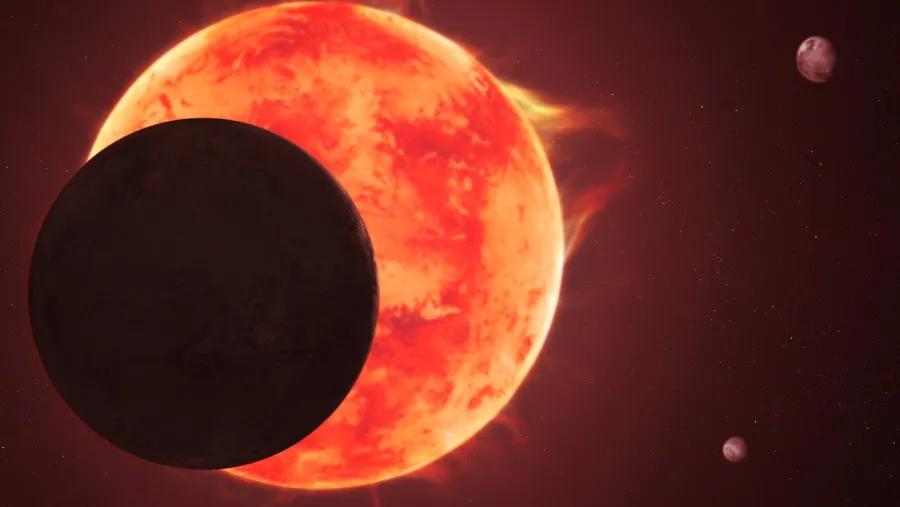

13. August 2025
TRAPPIST-1 d hat keine erdähnliche Atmosphäre
TRAPPIST-1 d ist der dritte Planet des 40 Lichtjahre entfernten Systems und liegt am Rand der gemäßigten Zone. Er umrundet seinen Stern in nur vier Tagen. Das James-Webb-Weltraumteleskop fand mit dem Instrument NIRSpec keine Hinweise auf Moleküle, die in der Erdatmosphäre häufig sind, etwa Wasser, Methan oder Kohlendioxid.
Eine erdähnliche Atmosphäre schließt das Forschungsteam damit aus. Offen bleibt, ob der Planet eine extrem dünne Atmosphäre wie der Mars besitzt, von dichten, hoch liegenden Wolken wie die Venus bedeckt ist oder ein kahler Gesteinskörper ganz ohne Atmosphäre ist.
Quelle: ESA/Webb: "Webb narrows atmospheric possibilities for Earth-sized exoplanet TRAPPIST-1 d." (weic2516), 13.08.2025